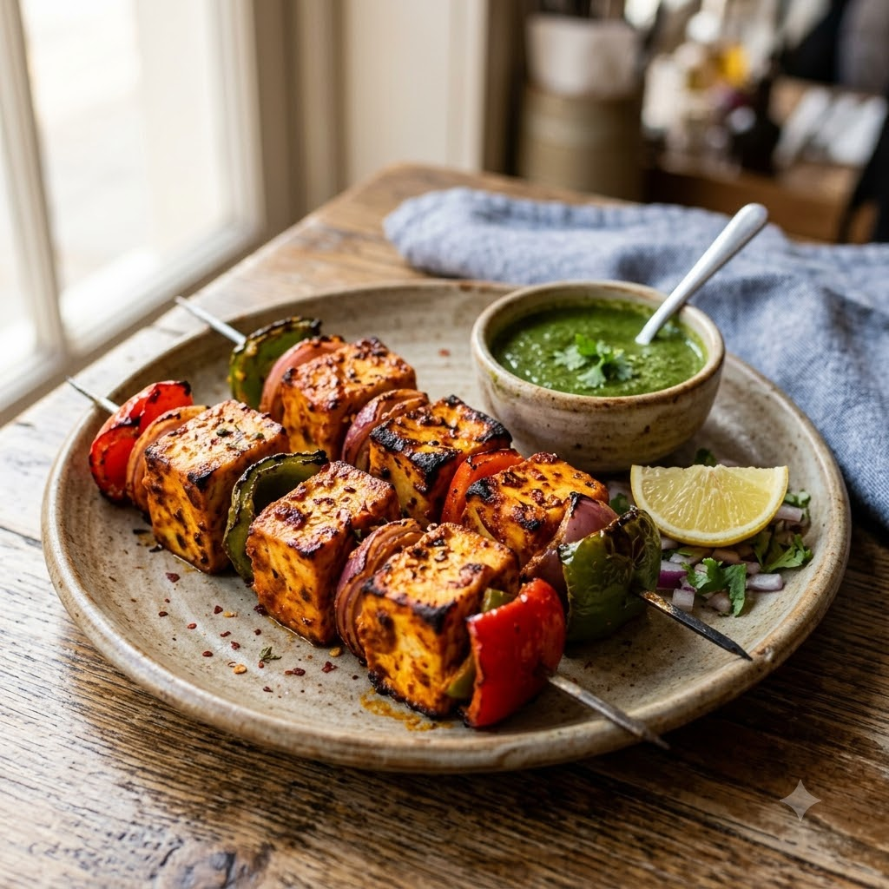

Paneer Tikka (marinated & grilled)

Paneer Tikka (marinated & grilled)
Chef Magic (Mix marinade) → Airfryer (Grill) 200°C Marinate 30 min + Grill 12 min — Serves 4
Gluten-Free • Vegetarian • High-Protein • Everyday
🔥 Airfryer🧑🍳 Chef Magic🍽 Serves 4
Prep ahead: Marinate the paneer and vegetables for at least 30 minutes before grilling.
Ingredients
- 400g paneer, cubed
- 1/2 cup thick yogurt
- 1 tbsp ginger-garlic paste (adrak-lehsun paste)
- 1 tsp red chilli powder (lal mirch powder)
- 1/2 tsp garam masala
- 1 tbsp mustard oil (sarson ka tel)
- Bell peppers & onion, cubed
- Salt to taste
Method
1Preheat: When you reach the Airfryer step, preheat it to 200°C for 4 minutes before adding the food.
2In Chef Magic, mix yogurt, ginger-garlic paste, chilli powder, garam masala, mustard oil and salt to make the marinade.
3Coat the paneer and vegetables in the marinade and refrigerate for at least 30 minutes.
4Skewer or arrange in the Airfryer basket.
5Grill at 200°C for 12 minutes, turning once, until charred at the edges.
6Serve with mint chutney and lemon wedges.